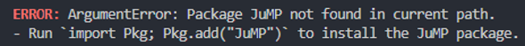
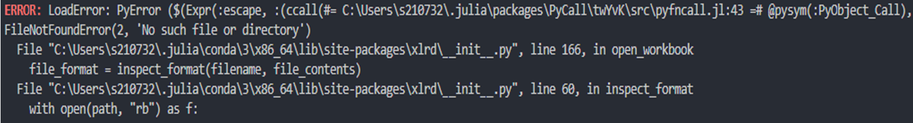
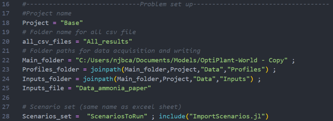
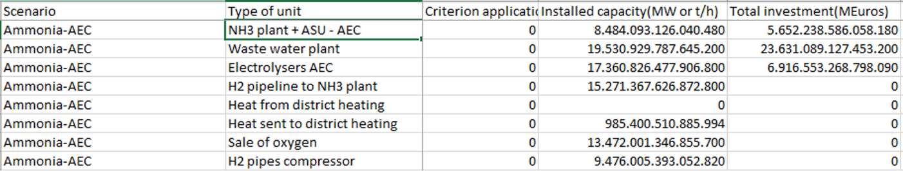
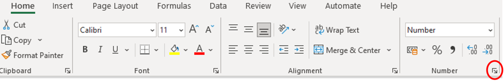

Examples and Troubleshooting
Common Errors
Package Not Found


Solution:
] activate env
add [PACKAGE_NAME]File Not Found


Check all paths in Main.jl are correct.
Excel Format Error

CSV uses commas and dots:

Fix Excel settings:



Results should be correct: